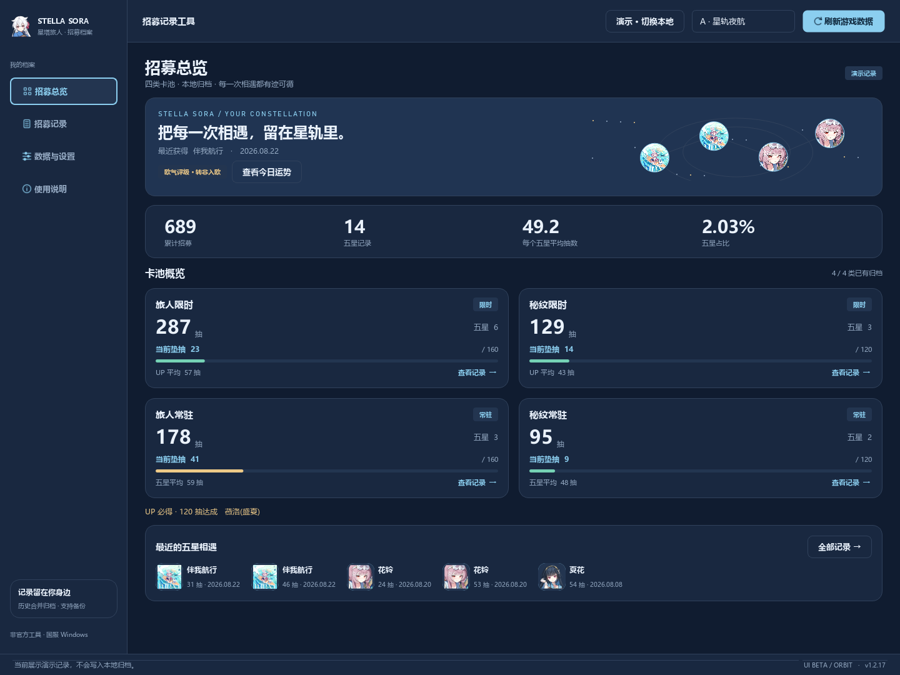

STELLA SORA / UI STUDIES
同一份招募记录，三种打开方式。
选择你喜欢的 UI 方向，浏览总览、记录与设置页面，也可以并排比较。
UI Beta · 演示数据
A
星轨夜航
深海蓝 · 星轨头像 · 侧栏导航
B
晴空工作台
冰蓝白 · 清晰统计 · 横向导航
C
旅人手札
雾紫纸张 · 相遇照片 · 收藏档案
招募总览
招募记录
数据与设置
小窗口效果
并排比较
A · 星轨夜航 / 招募总览
查看原尺寸 ↗

这是界面方案的截图预览。点击“查看原尺寸”可放大查看细节。
电脑、手机浏览器均可打开